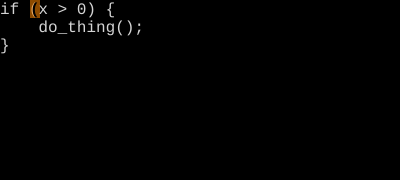
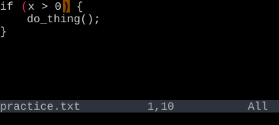
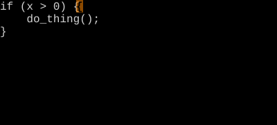

Percentage and Column Jumps
{n}% jumps to a percentage of the file. {n}| jumps to a column.
{n}% jumps to that percent through the file. {n}| jumps to column {n} on the current line. Both are obscure, both are occasionally exactly what you want.
{n}% is unusual: it jumps to {n} percent of the way through the file. 50% lands you in the middle of the buffer. Useful for big files when you don't want to count lines.
{n}| jumps to column {n} on the current line. Useful when working with fixed-width data, makefiles, or anything where columns matter.
| Key | Note |
|---|---|
| {n} | |
| % |
| Key | Note |
|---|---|
| {n} | |
| | |
Reference
| Key | Action |
|---|---|
| {n}% | Jump to {n}% of file |
| {n}| | Jump to column {n} of current line |
| % | (no count) Match bracket |
Worked example — % jumps to matching bracket
% bounces between paired (), [], and {}.


{ to }.
See also: File Motions, Line Motions, Match Bracket